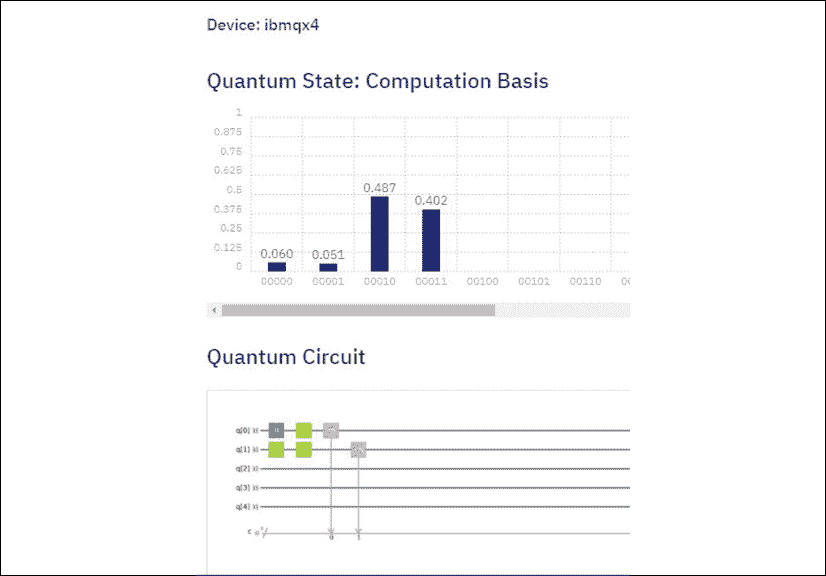

问题的答案
第 1 章-通过强化学习开始下一代人工智能
- Is reinforcement learning memoryless? (Yes | No)
答案是是的。强化学习是无记忆的。代理计算下一个状态，而不查看过去。这和人类有显著的不同。人类严重依赖记忆。基于 CPU 的强化学习系统在没有经验的情况下找到解决方案。人类的智慧仅仅证明了智慧可以解决问题。不多不少。一个自适应思考者可以想象新形式的机器智能。
必须指出，在某些情况下存在例外，但一般规则是无记忆系统。
- Does reinforcement learning use stochastic (random) functions? (Yes | No)
答案是是的。在特定的马尔可夫决策过程模型中，选择是随机的。在仅仅两个问题中，你可以看到贝尔曼方程是无记忆的，并且是随机决策的。没有那样的人为原因。成为一个适应性思考者是一种信仰的飞跃。你必须抛开过去的自己，开始用方程式来思考。
- Is the MDP based on a rule base? (Yes | No)
答案是否。人类基于规则的经验在这个过程中是无用的。例如，人类的思维通常基于因果法则。此外，MDP 为无法清楚表达其问题的未来用户提供了长时间咨询的有效替代方案。
- Is the Q function based on the MDP? (Yes | No)
答案是是的。基于 MDP 的贝尔曼方程开始流行的时候，就出现了 Q 这个表达。说你在使用 Q 函数比谈论贝尔曼更流行，贝尔曼在 1957 年把所有这些放在一起。事实是，安德烈·马尔科夫是俄罗斯人，他在 1913 年运用这种方法，使用一个包含 20，000 个字母的数据集来预测字母在小说中的未来用法。然后，他将其扩展到一个包含 10 万个字母的数据集。这意味着这个理论在 100 年前就存在了。问适合我们这个没有人情味的强大 CPU 的新世界。
- Is mathematics essential to AI? (Yes | No)
答案是是的。如果你掌握了线性代数和概率的基础知识，你将处于所有未来技术的顶端。在这个问题上花上几个月的时间或者修一门 MOOC 课程是值得的。否则，你会依赖别人向你解释事情。
- Can the Bellman-MDP process in this chapter apply to many problems? (Yes | No)
答案是是的。你可以用它来解决机器人学、市场分析、物联网、语言学和许多其他问题。
- Is it impossible for a machine learning program to create another program by itself? (Yes| No)
答案是否。这不是不可能的。DeepCode 已经做到了:https://www.deepcode.ai/。
不要惊讶。现在你已经成为一个自适应思考者，知道这些系统依赖的是方程，而不是人类，你就很容易理解数学系统并没有那么难复制的事实。
- Is a consultant required to enter business rules in a reinforcement learning program? (Yes| No)
答案是不。这只是一种选择。MDP 过程中的强化学习是无记忆和随机的。顾问在那里管理、解释和培训这些项目。
- Is reinforcement learning supervised or unsupervised? (Supervised | Unsupervised)
答案是无人监管。重点是从未标记的数据中学习。如果数据被标记，那么我们就进入了监督学习的世界；寻找模式并学习它们。在这一点上，你可以很容易地看到你在一场冒险的海上——一个无记忆、随机、无标签的世界等待你去发现。
- Can Q-learning run without a reward matrix? (Yes | No)
答案是没有。当然，聪明的开发人员总能找到解决这个问题的方法。这个系统需要一个起点。你会在第二章看到，在现实生活的项目中找到合适的回报矩阵是一项相当艰巨的任务。
第 2 章——构建奖励矩阵——设计数据集
- Raw data can be the input to a neuron and transformed with weights. (Yes | No)
如果数据是数字格式，答案是是。如果是正确的数字格式，输入可以乘以权重和偏差。
如果数据不是数字格式，那么它需要一个数字编码阶段。
- Does a McCulloch-Pitts neuron require a threshold? (Yes | No)
答案是是的。如果你没有东西来衡量价值，那么加起来的重量没有多大意义。麦卡洛克和皮特花了几个月的时间才把这些放在一起。起初，时间存在于等式中，就像它存在于我们的大脑中一样。但是后来，像约瑟夫·傅立叶(1768-1830)一样，他们发现了自我重复的周期——不需要比那个神经元更多的周期。
沃伦麦卡洛克和沃尔特皮茨发明了第一个神经元，并于 1943 年发表了一篇论文。传说在 1935 年，12 岁的沃尔特·皮茨，一个住在不良街区的穷孩子，被恶霸追逐，在图书馆寻求庇护。在那里，他发现了伯特兰·罗素和阿尔弗雷德·怀特黑德的《数学原理。反正他不仅发现了推理中的错误，还给伯特兰·罗素发了一封信！从那时起，沃尔特就以他的数学天才而闻名。他们和另一位天才沃伦麦卡洛克一起发明了第一个神经元。看似简单。但这是许多不眠之夜的结果。正如轮子的发明看起来很简单一样，至今没有发现比它更好的了。神经元的概念是人工智能的轮子。
- A logistic sigmoid activation function makes the sum of the weights larger. (Yes | No)
答案是否。sigmoid 函数的全部目的是在必要时减少总和，以获得可比较的数字。
- A McCulloch-Pitts neuron sums the weights of its inputs. (Yes | No)
答案是是的。只有你把权重加起来，它们才有意义。
- A logistic sigmoid function is a log10 operation. (Yes | No)
答案是否。sigmoid 函数基于欧拉数， e ，一个等于 2.71828 的常数。这个数产生一个自然对数。莱昂哈德·欧拉(1707-1783)在 18 世纪用羽毛笔发现了这一点——没有科学计算器或计算机！你注意到了吗，人工智能中使用的主要数学函数可以追溯到很久以前？这方面的炒作围绕着我们认为我们现在已经发现，但已经存在了几十年，有时甚至几个世纪，将在下面的章节中处理。
- A logistic softmax is not necessary if a logistic sigmoid function is applied to a vector. (Yes | No)
答案是否。计算一个向量中几个数的和，然后用每个数除以这个和，就可以看出所涉及的比例。这是一个需要牢记在心的宝贵工具。
- A probability is a value between –1 and 1. (Yes | No)
答案是否。概率介于 0 和 1 之间。
第 3 章-机器智能-评估函数和数值收敛
- Can a human beat a chess engine? (Yes | No)
答案是否。今天，最高级别的国际象棋比赛不是在人类之间，而是在国际象棋引擎之间。每个国际象棋引擎软件编辑器通过使它们的算法更快和需要更少的 CPU 来为这些比赛做准备。今天，在智能手机上运行的顶级国际象棋引擎可以击败人类。在人与人的国际象棋比赛中，国际象棋的水平已经达到了非常高的复杂性极限。人类现在主要是针对机器进行训练。
- Humans can estimate decisions better than machines with intuition when it comes to large volumes of data. (Yes | No)
答案是不。借助适当的算法，一台普通机器甚至一部智能手机的纯粹 CPU 能力可以产生比人类更好的结果。
- Building a reinforcement learning program with a Q function is a feat in itself. Using the results afterward is useless. (Yes | No)
答案是没有。学习 AI 的同时，只要验证结果正确就够了。在实际应用中，结果被用于数据库或作为其他系统的输入。
- Supervised learning decision tree functions can be used to verify that the result of the unsupervised learning process will produce reliable, predictable results. (Yes | No)
答案是是的。决策树函数在很多情况下非常有效。当涉及大量数据时，决策树函数可用于分析机器学习过程的结果，并有助于预测过程。
- The results of a reinforcement learning program can be used as input to a scheduling system by providing priorities. (Yes | No)
答案是是的。强化学习 Q 函数的输出可以作为输入注入到另一个 Q 函数中。几个结果可以在第一阶段合并，并成为第二阶段强化学习会议的奖励矩阵。
- Can artificial intelligence software think like humans? (Yes | No)
答案是是，而不是。在早期，这是用基于神经科学的模型进行的尝试。然而，应用数学模型目前要有效得多。
例如，谁知道在神经形态计算的未来研究中会发生什么？但就目前而言，深度学习，主要趋势，是基于数学函数的。
第 4 章–使用 K 均值聚类优化您的解决方案
- Can a prototype be built with random data in corporate environments? (Yes | No)
答案是是，而不是。为了开始开发原型，使用随机数据可以帮助确保基本算法按计划工作。
但是，一旦原型先进，使用设计良好的数据集会更可靠。然后，一旦训练完成，随机数据可以再次有助于了解您的系统在所有情况下的表现。
- Do design matrices contain one example per matrix? (Yes | No)
答案是没有。一个好的设计矩阵在每一行或每一列都包含一个例子，这取决于你想要的形状。但是要小心；一个包含数据的设计矩阵如果过于高效，可能会过度适应。这意味着学习算法对该数据有效，但不适用于新数据。另一方面，如果数据集包含太多错误，那么算法可能会欠拟合，这意味着它不会正确学习。一个好的设计矩阵应该包含可靠的数据、一些不精确的数据和一些噪声(一些可能以不可靠的方式影响算法的数据)。
- Automated guided vehicles (AGVs) can never be widespread. (Yes | No)
答案是否。这个句子不是一个正确的断言。AGV 从现在开始会无止境的扩展:无人机、汽车、飞机、仓库车辆、工业车辆等等。AGV，加上 AI 和 IoT，构成了第四次工业革命。
- Can k-means clustering be applied to drone traffic? (Yes | No)
答案是是的。看到交通堵塞的地方将防止无人机堵塞(无人机盘旋和等待)。
- Can k-means clustering be applied to forecasting? (Yes | No)
答案是是的。k-均值聚类可用于预测。
- Lloyd's algorithm is a two-step approach. (Yes | No)
是，劳氏算法首先将每个数据点分类到最佳聚类中。然后，一旦完成，它将计算该中心的几何中心或质心。当没有数据点改变聚类时，算法已经被训练。
- Do hyperparameters control the behavior of the algorithm? (Yes | No)
答案是是的。超参数决定了计算的过程:聚类的数量、特征、批量大小等等。
- Once a program works, the way it is presented does not matter. (Yes | No)
答案是否。没有清晰的结果呈现，整个训练过程往好里说是混乱，往坏里说是无用。
- K-means clustering is only a classification algorithm. It's not a prediction algorithm. (Yes | No)
答案是不。k-均值聚类也可以用作预测算法。
第 5 章——如何使用决策树来增强 K 均值聚类
问题将集中在超参数上。
- The number of k clusters is not that important. (Yes | No)
答案是没有。聚类的数量需要仔细选择，可能是一种试错法。每个项目将导致不同的集群。
- Mini-batches and batches contain the same amount of data. (Yes | No)
答案是没有。“批量”一般指数据集，“小批量”代表数据的“子集”。
- K-means can run without mini-batches. (Yes | No)
答案是是，是不是。如果数据量仍然很小，那么训练时期可以在整个数据集上运行。如果数据量超过了合理的计算机能力(CPU 或 GPU)，则必须创建小批量来优化训练计算。
- Must centroids be optimized for result acceptance? (Yes | No)
答案是是，而不是。假设你想把钥匙放在钥匙孔里。钥匙孔代表了你视觉集群的质心。你必须精确。如果你只是把一张纸扔进垃圾桶，你不需要瞄准集群的完美中心(质心)(由垃圾桶的边缘标记)来实现这个目标。质心精度取决于对算法的要求。
- It does not take long to optimize hyperparameters. (Yes | No)
答案是是，而不是。如果是一个简单的项目，它不会花很长时间。如果你面对的是一个大的数据集，找到最优的超参数需要一些时间。
- It sometimes takes weeks to train a large dataset. (Yes | No)
答案是是的。媒体炒作和努力工作是两个不同的世界。机器学习和深度学习仍然是难以实施的项目。
- Decision trees and random forests are unsupervised algorithms. (Yes | No)
答案是是，而不是。决策树既可以用于监督学习，也可以用于非监督学习。决策树可以从目标值开始，这使它们受到监督。随机森林也可以以同样的方式使用。
第 6 章——用谷歌翻译创新人工智能
- Is it better to wait until you have a top-quality product before putting it on the market? (Yes | No)
答案是是，而不是。语境决定一切。21 世纪初，空客努力完成有史以来最大的客机 A380。在运送商业乘客之前，他们的工程师进行了数百项改进。我们希望不会少！
就谷歌翻译而言，这是一个巨大的拒绝。通过将谷歌翻译放到网上并提供一个 API，谷歌鼓励了成千上万的人工智能开发者、语言学家、顾问和用户提供反馈和改进。此外，谷歌再次占据了网络市场的大部分份额。
- Considering the investment made, a new product should always be priced high to reach the top segment of the market. (Yes | No)
答案是是和否。还是那句话，语境决定答案。当法拉利将一款新车投放市场时，价格必须很高，原因有二；汽车的质量和生产成本使得有必要这样做，以使创新有利可图。此外，法拉利避免大规模生产，以保持高质量。
当亚马逊网络服务通过 SageMaker 将机器学习推向市场时，它实施了一种“按需付费”的政策，从市场的低端开始。该产品过去和现在都有其局限性，但亚马逊现在收到了大量的反馈，并在不断改进该产品。
- Inventing a new solution will make it known in itself. (Yes | No)
是。一个社会已经准备好接受的发明，无论如何都会自己走自己的路。你可能会惊讶地知道，通过绘制来保存相机的投影图像可以追溯到很久以前，没有人确切知道它是何时首次使用的。没有人知道它是被发明还是被发现。无论如何，第一台暗箱(第一台“相机”)是革命性的。现在证明著名画家使用这种技术。这幅画被投影在纸上或画布上。“打印机”是手动的。画家就是“印刷工”然而，正如我们所知，相机只是在 20 世纪才变得具有破坏性。
- AI can solve most problems without using standard non-learning algorithms. (Yes | No)
答案是否。例如，非学习的经典算法是创建数据集所必需的。此外，AI 依赖于云服务器、架构、所有语言(C++、Java、Python 等)的标准算法以及 Apache 服务器。即使在自动驾驶汽车上，安装的传感器也需要标准的艰苦工作，才能让它们工作并解释信息，然后人工智能才能解决一些问题。
人工智能就像我们的大脑。没有身体，它就不能运作。
- Google Translate can satisfactorily translate all languages. (Yes | No)
读完这一章，你可能会惊讶地得到一个是和否的答案。如果你用谷歌翻译说“你好”，“你好吗？”“谢谢你的消息”，以及在你最喜欢的社交网络或电子邮件中类似的友好短语，这就足够了。
但是在处理更详细的短语和句子时，Google Translate 提供了随机的满意结果。从用户的角度来看，这是个坏消息。对于一个开发商来说，这是一座金矿！
- If you are not creative, it is no use trying to innovate. (Yes | No)
答案是巨大的不。你当然不需要想象力或创造力来创新。不要让任何人使你相信这种无稽之谈。如果你正在设计一个解决方案，发现缺少一个组件，在网上寻找一些替代组件，谈论它，并找到可以帮助你的人。然后通过团队合作完成。这每次都管用！
即使是伟大的比尔·盖茨也很聪明，他向蒂姆·帕特森寻求帮助来开发 MS-DOS，他后来成为了亿万富翁。
- If you are not a linguist, it is no use bothering with trying to improve Google Translate. (Yes | No)
答案是不！再说一次，永远不要让别人让你相信这种无稽之谈。创新是团队合作。如果你喜欢谷歌翻译，你理解这一章并有想法，与你周围的语言学家或通过社交网络合作。世界由你来改善！
- Translating is too complicated to understand. (Yes | No)
否。有些人解释的方式太复杂了。如果你会说一种语言，你就是把你的思想转化为语言的专家。有了工作，你就可以进入翻译行业。
- AI has already reached its limits. (Yes | No)
当然不是！我们刚刚触及了理论和应用的表面。
第 7 章–用朴素贝叶斯优化区块链
- Cryptocurrency is the only use of blockchains today. (Yes | No)
否。例如，IBM HyperLedger 使用区块链来组织供应链环境中的安全交易。
- Mining blockchains can be lucrative. (Yes | No)
是的。但这是一种风险，就像任何其他采矿作业或任何投机行为一样。一些公司拥有巨大的资源来开采加密货币，这意味着他们可以在创建区块方面击败较小的竞争对手。
- Blockchains for companies cannot be applied to sales. (Yes | No)
否。区块链云平台提供智能合同和销售过程中管理交易的安全方式。
- Smart contracts for blockchains are more accessible to write than standard offline contracts. (Yes | No)
是的，如果是标准合同，这可以加快交易速度。
反之，没有。如果交易很复杂，需要定制，就必须由律师来写合同，合同只能在区块链云平台上使用。
- Once a block is in a blockchain network, everyone in the network can read the content. (Yes | No)
是，如果没有实施隐私规则。
否，如果实施了隐私规则。例如，IBM Hyperledger 提供了隐私功能。
- A block in a blockchain guarantees that absolutely no fraud is possible. (Yes | No)
是和否。区块链中的块不能被再次改变，从而避免了欺诈。没有人能篡改数据。但是，如果交易首先是非法的，那么封锁也是欺诈性的。
- There is only one way of applying Bayes' theorem. (Yes | No)
否。贝叶斯定理有许多变体。例如，使用朴素贝叶斯避免了条件概率约束。但是另一种方法可以使用条件概率。
- Training a naive Bayes dataset requires a standard function. (Yes | No)
否。例如，高斯函数可用于计算朴素贝叶斯算法等。
- Machine learning algorithms will not change the intrinsic nature of the corporate business. (Yes | No)
没有。随着算法在公司传播，优化流程，设计良好的机器学习将扰乱商业的每个领域。
第八章——用前馈神经网络解决异或问题
- Can the perceptron alone solve the XOR problem? (Yes | No)
是的。在 1969 年，答案是否定的。一个神经网络，或者一些其他的数学过程，对于解决这个问题是必要的。请注意，这是采用“前馈”供电的电路的常见问题，很久以前就已经解决了。
- Is the XOR function linearly non-separable? (Yes | No)
如果使用单个神经元，答案是否，如果使用至少两个神经元的隐藏层，答案是是。这是深度学习中要解决的一个主要问题。例如，如果你不能在一张照片中分离出一张脸的特征，那么识别这张脸将会很困难。想象一张照片，一半脸在阴影中，另一半脸在明亮的阳光下。由于一半的眼睛和特征处于阴影中，一个糟糕的深度学习程序可能只捕捉到脸的一半，用一个糟糕的边缘检测功能在错误的地方分离脸。因此，线性可分性是机器学习的一个关键方面。
- One of the main goals of layers in a neural network is classification. (Yes | No)
答案是是的。一旦数据可以用给定的神经网络结构识别，预测和许多其他功能就成为可能。深度学习的关键是能够将数据转化为信息片段，这些信息片段将通过在层上获得的抽象而变得有意义。
- Is deep learning the only way to classify data? (Yes | No)
答案是否。你可以用 SQL 查询、电子表格、人工智能、机器学习和标准源代码对数据进行分类。当涉及分类的许多维度时，深度学习变得至关重要:首先在图片中找到对象的边缘，然后形成，然后确定对象代表什么。用几百万张图片做到这一点，已经超出了标准编程或者早期 AI 和机器学习程序的范围。
- A cost function shows the increase in the cost of a neural network. (Yes | No)
答案是否。成本函数决定了培训的成本。运行 10 万个纪元比运行 5 万个纪元更贵。因此，在每个时期，必须估计训练的成本(系统离其目标有多远)。因此，好的成本函数将降低运行神经网络的成本。
- Can simple arithmetic be enough to optimize a cost function? (Yes | No)
答案是是的。只要你知道你的成本函数增加或减少到什么程度，任何可行的都可以。
- A feedforward network requires inputs, layers, and an output. (Yes | No)
答案是是的。没有层，就没有网络。
- A feedforward network always requires training with backpropagation. (Yes | No)
在不断变化的环境中，答案通常是肯定的。由于这个领域是新的，我们倾向于认为一旦培训完成，工作就完成了。如果数据集在重复的环境中非常稳定，例如识别商店、仓库或工厂中各种恒定产品之间的差异，那么神经网络将进行其设计的分类。如果引入了新产品，那么可以重新开始培训。
- In real-life applications, solutions are only found by following existing theories. (Yes | No)
答案是没有。没有学术研究，深度学习甚至不会存在。如果没有大学，所用的想法会非常简单，永远不会奏效。
另一方面，研究人员需要现实生活中的反馈。如果我们发现了他们推荐的新的做事方法，我们应该发表它们来帮助全球研究。这是一条双行道。
第 9 章–用卷积神经网络(CNN)进行抽象图像分类
- A convolutional neural network (CNN) can only process images. (Yes | No)
答案是没有。CNN 可以处理文字、声音或视频序列，进行分类和预测。
- A kernel is a preset matrix used for convolutions. (Yes | No)
答案是是，是不是。有许多预设矩阵用于处理图像，例如本章
Edge_detection_Kernel.py中使用的矩阵。然而，在这一章中，内核是随机创建的，然后网络训练它们的权重以适应目标图像。 - Does pooling have a pooling matrix, or is it random?
在某些情况下，当池层添加到模型中时，池矩阵的大小是一个选项，例如 2×2 池窗口。然而，在 AutoML 神经网络中，例如，我们可以尝试运行优化算法，该算法将测试各种大小，以查看哪一个产生最佳性能。
- The size of the dataset always has to be large. (Yes | No)
否。数据集没有标准大小。要看培养模式。例如，如果目标影像不包含复杂要素，则数据集将小于复杂要素数据集。此外，
ImageDataGenerator函数将通过使用提供的选项扭曲数据来扩展数据。 - Finding a dataset is not a problem with all the available image banks on the web. (Yes | No)
答案是是，而不是。是的，因为如果模型仍然是标准的学术模型，那么可用的图像(CIFAR、MNIST 或其他)就足够了。
不，因为在现实生活中的公司情况下，你将不得不建立你的数据集，并添加包含噪声的图像。噪声需要对模型进行更多的微调，以变得可靠和通用。
- Once a CNN is built, training it does not take much time. (Yes | No)
答案是不。无论是哪种模式，如果你想让它变得可靠，培训都将是耗时的。正如本章所见，一个模型需要大量的选项和数学思考。
- A trained CNN model applies to only one type of image. (Yes | No)
是和否。过度拟合有三种主要类型:
- 为某种类型的图像过度拟合模型，但完全没有实现的后果。在这种情况下，模型的分类和预测足以满足设定的目标。假设你正在使用一种非常高清晰度的图像。CNN 会发现我们可能试图发现的小细节。但是，当应用程序处于生产状态时，较低质量的图像可能会使模型无法识别它在高质量图像中准确检测到的内容。
- 过度拟合一个模型会产生实现问题，因为它不能同时适应不同的图像。然后模特会经历更多的训练。
- 过度拟合模型可以很好地训练某种类型的图像，但在需要时却不适合类似类型的图像。
每种情况都有其局限性。只要模型有效，就没有通用的规则。由你来决定。
- A quadratic loss function is not very efficient compared to a cross-entropy function. (Yes | No)
答案是否。每个模型都有其局限性。二次损失函数在某些模型上工作良好，但在其他模型上效果不佳。这代表了训练模型的主要问题。没有通用的规则可以帮助你。你必须使用你的神经元或者编写一个程序来自动修改模型。
- The performance of a deep learning CNN does not present a real issue with modern CPUs and GPUs. (Yes | No)
答案是是，是否。如果模型的运行速度足够满足您的需求，那么性能将不会限制您项目的结果。然而，在许多情况下，这仍然是一个问题。减少要素以集中于最佳要素，这也是图层将分析范围逐层缩小的原因之一。
第十章——概念表征学习
- The curse of dimensionality leads to reducing dimensions and features in machine learning algorithms. (Yes | No)
是。大量的数据和特征使得有必要提取所观察事件的主要特征(图像、声音和文字)来理解它。
过拟合和欠拟合也适用于维数约减。一旦应用程序面对现实生活中的数据，减少功能直到系统在实验室中工作(过度适应)可能会导致无处可去。尝试使用所有的特性可能会导致不适应，因为应用程序根本没有解决任何问题。
正则化不仅适用于数据，也适用于项目的每个方面。
- Transfer learning determines the profitability of a project. (Yes | No)
是的，如果一个人工智能模型的应用本身在第一次是无利可图的，但如果用于类似类型的学习可以产生利润。毫无疑问，重用某些功能会产生利润。
否，如果第一个应用程序非常有利可图，但“过度适应”以满足给定项目的规格。
- Reading model.h5 does not provide much information. (Yes | No)
没有。在这种情况下 No 意味着这个句子的断言是错误的。保存的模型确实提供了有用的信息。例如，保存 TensorFlow 模型的权重在训练过程中对控制值至关重要。此外，经过训练的模型通常使用 HDF 文件(
.h5)来加载经过训练的权重。分层数据格式(HDF)包含科学数据的多维数组。 - Numbers without meaning are enough to replace humans. (Yes | No)
是的，在很多情况下，数学提供了足够的工具来代替人类完成很多任务(游戏、优化算法、图像识别)。
否，在数学无法解决需要概念的问题的情况下，比如 NLP 的很多方面。
- Chatbots prove that body language doesn't mean that much. (Yes | No)
是的，在很多应用中，肢体语言并不能提供额外的信息。如果只需要一个是或否的答案，肢体语言不会给谈话增添多少内容。
否，从某种意义上说，如果需要情商来理解用户的语气，检测肢体语言的网络摄像头可以提供有用的信息。
- Present-day artificial neural networks (ANNs) provide enough theory to solve all AI requests. (Yes | No)
否。人工神经网络(ann)无法解决成千上万的问题，例如，翻译诗歌小说或识别形状不断变化的图像。
- Chatbots can now replace humans in all situations. (Yes | No)
否。需要添加概念。市场提供了所有必要的工具。要想与聊天机器人有效交流，还需要几年时间。
- Self-driving cars have been approved and do not need conceptual training. (Yes | No)
是和否；在这方面有一些争论。一方面，传感器和数学(线性代数、概率)可能会在几年内成功地在大多数驾驶条件下有效导航。
然而，某些问题在关键情况下将需要概念(和更多的机器人)。如果自动驾驶汽车遇到躺在路上的伤者，最好的处理方式是什么？选择是呼叫帮助，如果帮助来得太晚，找到另一个人，抱起受害者，开车送他们去医院(机器人)，等等。
- Industries can implement AI algorithms for all of their needs. (Yes | No)
是和否。在许多情况下，所有必要的工具都可以使用。如果合适的团队决定用人工智能和机器人技术解决一个问题，这是可以做到的。
然而，在处理特殊情况时，缺少一些工具；例如，面对计划外事件时的实时管理决策工具。如果一个系统发生故障，人类仍然可以更快地适应，找到替代方案继续生产。
第 11 章——结合强化学习和深度学习
- A CNN can be trained to understand an abstract concept? (Yes | No)
是。CNN 可以对图像进行分类并做出预测。但是 CNN 可以分析任何类型的对象或表示。例如，一幅图像可以链接到一个单词或短语。因此，图像本身就成了一种信息。
- Is it better to avoid concepts and only use real-life images? (Yes | No)
否。图像提供了许多实际应用，但是在某些时候，需要更多的图像来解决规划问题。
规划需要的不仅仅是这种类型的数据集。
- Do planning and scheduling mean the same thing? (Yes | No)
否。规划描述了必须执行的任务。日程安排增加了时间因素。计划告诉我们做什么，时间表告诉我们什么时候做。
- Is Amazon's manufacturing patent a revolution? (Yes | No)
否。制造服装已经被世界各地的工厂所掌握。如果这个过程中的某些东西是全新的，那将是一场革命。然而，服装行业的自动化已经存在了 20 多年。专利是现有元素的一个特例，就像一个新品牌的汽车。
是。通过这样的全球分销，亚马逊已经非常接近最终用户。最终用户可以选择一件新衣服，它将根据需求直接生产。这种连接将改变服装生产流程，迫使其竞争对手寻找新的服装生产和销售方式。
- Learning how warehouses function is not useful. (Yes | No)
否。网购对仓库空间和流程的要求越来越高。仓库的数量将会比商店增长的更快。仓库的 AI 应用机会很多。
- Online marketing does not require AI. (Yes | No)
没有。相反，AI 每天都被应用程序用于在线营销，这种情况将持续几十年。
第 12 章——人工智能和物联网
- Driving quickly to a location is better than safety in any situation. (Yes | No)
是和否。
自动驾驶汽车面临着与人类驾驶汽车相同的困难:准时到达某个地点，遵守速度限制，或者尽可能安全地驾驶。自动驾驶汽车和人类一样，也在通过经验不断提高驾驶能力。
是的。有时候，自动驾驶汽车在交通流量很少的高速公路上会表现得更好。
不会。有时，如果高速公路很危险(由于天气条件和交通拥挤)，自动驾驶汽车应该选择更安全的道路，即低速和几乎没有交通。这样，如果出现困难，自动驾驶汽车可以减速，甚至比在高速公路上更容易停下来。
- Self-driving cars will never really replace human drivers. (Yes | No)
没有人能回答那个问题。随着自动驾驶汽车积累能力和经验，它们最终很可能会比人类驾驶得更好。
例如，在非常不可预测的情况下，人类可能会偏离道路以避开另一辆车，并后退一点。让自动驾驶汽车做到这一点需要做更多的工作。
不过，有一件事是肯定的。如果一个人类整夜开车，睡着了，自动驾驶汽车会检测到头部下垂运动，接管，挽救生命。如果人类在驾驶时出现医疗问题，自动驾驶汽车也可以挽救生命。
- Will a self-driving fire truck with robots be able to put out a fire one day? (Yes | No)
是。当消防部门面临难以扑灭的火灾时，将自动驾驶消防车与机器人结合起来肯定会挽救许多生命。那些获救的生命包括冒着生命危险的消防员。这可能有助于消防员专注于帮助人们，而机器人做更艰苦的工作。这个机器人-人类团队无疑将在未来拯救成千上万的生命。
- Do major cities need to invest in self-driving cars or avoid them? (Invest | Avoid)
投资。有了缓慢但安全的自动驾驶汽车，通勤者可以共享公共、免费或非常便宜的电动自动驾驶汽车，而不是必须开车。这就像有一个私人司机。
- Would you trust a self-driving bus to take children to school and back? (Yes | No)
随着技术的不断发展，这个答案会随着时间而改变。
否。不是以现在的自动驾驶车辆的状态。你不应该 100%完全信任自动驾驶汽车！
是的，当自动驾驶汽车、公共汽车和卡车证明它们可以胜过人类。自动驾驶车辆不会犯和人类一样的错误:开车时使用智能手机，不看路和乘客说话，等等。
- Would you be able to sleep in a self-driving car on a highway? (Yes | No)
没有，在目前的自动驾驶汽车技术状态下还没有。
是，当可靠性取代怀疑。
- Would you like to develop a self-driving program for a project for a city? (Yes | No)
那是给你考虑的！您也可以通过直接联系公司或 AGV 制造商，将该技术应用于 AGV 仓库。
第 13 章–使用 TensorFlow 2.x 和 TensorBoard 可视化网络
- A CNN always has the same number of layers. (Yes | No)
否。CNN 没有相同数量的层，甚至没有相同类型的层。层数是优化人工神经网络工作的一部分。
- ReLU is the best activation function. (Yes | No)
否。ReLU 是一个有效的激活函数，但还有其他函数，如 leaky ReLU、softmax、sigmoid 和 tanh。
- It is not necessary to compile a sequential classifier. (Yes | No)
否。断言应该是肯定的——这是必要的。
- The output of a layer is best viewed without running a prediction. (Yes | No)
否。层的输出和预测是不相关的。图层的输出可以是图层的变换(卷积、池化、下降、展平等)或预测。
- The names of the layers mean nothing when viewing their outputs. (Yes | No)
否。层次意味着一切！汇集层和丢弃层是完全不同的。
- TensorFlow 2.x does not include Keras. (Yes | No)
否。TensorFlow 现在已经集成了 Keras，这有助于建立无缝的神经网络。
- Google Colaboratory is just a repository, like GitHub. (Yes | No)
没有。谷歌合作实验室提供了一个小而免费的服务器来在线创建和运行程序。
- Google Colaboratory cannot run notebooks. (Yes | No)
否。它可以运行笔记本。
- It is possible to run TensorBoard in Google Colaboratory notebooks (Yes | No)
是。这是一个有用的特性。
- Accuracy is displayed in TensorBoard (Yes | No)
是。例如，这是评估人工神经网络效率的有效方法。
第 14 章–使用受限波尔兹曼机器(RBM)和主成分分析(PCA)准备聊天机器人的输入
- RBMs are based on directed graphs. (Yes | No)
否。RBM 图是无向的、无监督的和无记忆的，决策是基于随机计算的。
- The hidden units of an RBM are generally connected to one another. (Yes | No)
否。RBM 的隐藏单元通常不会相互连接。
- Random sampling is not used in an RBM. (Yes | No)
否。假的。吉布斯随机抽样常用于 RBMs。
- PCA transforms data into higher dimensions. (Yes | No)
是。PCA 的要点是将数据转换成较高抽象维度中的较低数量的维度(隔离的关键维度),以找到主分量(协方差矩阵的最高特征值),然后是第二高，直到最低值。
- In a covariance matrix, the eigenvector shows the direction of the vector representing that matrix, and the eigenvalue shows the size of that vector. (Yes | No)
是。特征值表示一个特征有多重要，特征向量提供一个方向。
- It is impossible to represent a human mind in a machine. (Yes | No)
否。在一定程度上，在有限的范围内使用传感器是可能的。
- A machine cannot learn concepts, which is why classical applied mathematics is enough to make efficient AI programs for every field. (Yes | No)
否。千万不要相信。进步正在取得，并且永远不会停止，直到思维机器成为主流。
第 15 章-建立一个认知的 NLP UI/CUI 聊天机器人
- Can a chatbot communicate like a human? (Yes | No)
没有。像人一样交流意味着像人一样:拥有一个有肢体语言、感觉、气味、恐惧荷尔蒙等等的身体。聊天机器人只是模仿这些行为。
- Are chatbots necessarily AI programs? (Yes | No)
否。很多呼叫中心用的是“按 1，按 2 …按 n 的方法，需要精心组织却没有 AI。
- Chatbots only need words to communicate. (Yes | No)
答案并不明确。
是。简单的聊天机器人可以在受控的情况下用文字交流。
否。当涉及一词多义(同一个单词或情况有几个意思)时，象形图和更多的东西会增加更有效的维度。
- Do humans only chat with words? (Yes | No)
否。例如，人类通过声音、肢体语言或音乐来表达自己。
- Humans only think in words and numbers. (Yes | No)
否。当然不是。人类用图像、声音、气味和感觉来思考。
- Careful machine learning preparation is necessary to build a cognitive chatbot. (Yes | No)
答案取决于上下文。
否。在有限的“按 1 或按 2”情况下，聊天机器人可以在有限的认知能力下表现良好。
是。要与人进行真正的对话，脑海中的图像是提供移情交流的关键。
- For a chatbot to function, a dialog flow needs to be planned. (Yes | No)
这取决于你想让你的聊天机器人做什么。
是。它将在商业环境中提供更好的结果。
否。如果你想聊天机器人自由交谈，你需要释放它一点。这仍然需要对对话进行规划，但是它更加灵活。
- A chatbot possesses general AI, so no prior development is required. (Yes | No)
否。这目前是不可能的。现实生活中只存在狭义(具体到一个或几个领域)的 AI，与科幻电影和媒体炒作相反。
- A chatbot translates fine without any function other than a translation API. (Yes | No)
否。在翻译机器人的历史上，如果没有额外的定制，翻译是不太可靠的。
- Chatbots can already chat like humans in most cases. (Yes | No)
没有。翻译一种语言将需要相当多的挑战性工作和贡献。
第 16 章——改善聊天机器人的情商缺陷
- When a chatbot fails to provide a correct response, a hotline with actual humans needs to take over the conversation. (Yes | No)
这归结为语境和实用性。
是的。这是最好的解决方案。让互动聊天服务发挥作用。
否。在许多情况下，这太昂贵了。一个漂亮的支持屏幕可以完成这项工作，并向支持团队发送电子邮件。
- Small talk serves no purpose in everyday life or with chatbots. It is best to just get to the point. (Yes | No)
同样，这是一个语境问题。
是。如果是应急机器人当然可以！
否。如果聊天机器人在那里执行一个乏味的管理功能，某种程度的闲聊会让系统变得更容易忍受。
- Data logging can be used to improve speech recognition. (Yes | No)
是。绝对的。更多的数据意味着更好的机器学习训练。
- The history of a chatbot agent's conversations will contain valuable information. (Yes | No)
是。绝对的。更多的反馈意味着更多的机器学习进步。
- Present-day technology cannot make use of the data logging of a user's dialogs. (Yes | No)
否。当然，我们可以解析数据记录并提取有价值的信息。
- An RNN uses sequences of data to make predictions. (Yes | No)
是的，确实如此。
- An RNN can generate the dialog flow of a chatbot automatically for all applications. (Yes | No)
是和否。可以，但是在自动对话流的历史中，质量有时仍然很糟糕！
第十七章——混合神经网络中的遗传算法
- A cell contains 42 chromosomes. (Yes | No)
否。一个细胞有 46 条染色体。
- A genetic algorithm is deterministic, not random. (Yes | No)
否。遗传算法是随机的，这使得它比许多确定性算法更有效。
- An evolutionary algorithm means that program code evolves. (Yes | No)
没有一个明确的答案。
否。该程序像任何其他程序一样运行。
是。在某些方面，当它用于优化混合神经网络中的神经网络时，它改变了系统的参数。此外，例如，可以使用遗传算法来添加或去除 CNN 的层。
- It is best for a child to have the same genes as one of the parents even after many generations. (Yes | No)
否。肯定不是！我们需要不同的基因来保持一个合适的基因群。
- Diversity makes the gene sets weaker. (Yes | No)
否。多样性越大，基因库就越能适应和保持健康。
- Building a neural network only takes a few lines, and the architecture always works. (Yes | No)
这要看你说的“工作”是什么意思了。
是。例如，用 TensorFlow 2.x 构建一个神经网络只需要几行代码，它就可以工作。
否。神经网络将会工作，但是在它的结构和超参数被微调之前，它很可能是无效的。
- Building a neural network with a genetic algorithm can help optimize the architecture of the layers. (Yes | No)
是。将遗传算法扩展到层优化是可能的。每一层可以是一个基因，然后可以运行各种替代方案来检查它们的准确性。
- Hybrid neural networks are useless since deep learning will constantly progress. (Yes | No)
没有。深度学习将达到一个渐近线，所有系统都是如此。在这一点上，新的维度可以添加到深度学习架构中，如遗传算法。
- Would you trust a genetic algorithm to make decisions for you? (Yes | No)
是，如果系统设计合理。不，如果你不相信遗传算法！
- Would you trust a hybrid neural network to optimize the architecture of your network? (Yes | No)
是，如果系统设计合理。不会，如果不靠谱或者有偏见的话。
第 18 章-神经形态计算
- Neuromorphic computing reproduces our mental activity. (Yes | No)
否。这才是重点。神经形态始于尚未形成高级精神活动的亚符号低级神经元脑活动刺激。我们的心理活动已经使用了符号，并包含了以文字、图像、数字和各种结构形式的表现。
然而，如果我们指的是转化为精神活动的输出结果，我们可以说是。我的观点是，是和不是的答案限制了我们对人工智能的看法。
- Neuromorphic computing reproduces our brain activity. (Yes | No)
是。这才是重点！核心概念是从大脑活动到神经元尖峰形成的结构。
- Semantic Pointer Architecture (SPA) is a hardware architecture. (Yes | No)
否。语义指针就像计算机程序指针，比如 C++指针。不同的是，它们带有部分表示意义，因此有了“语义”这个词。
- NEF stands for Neural Engineering Framework. (Yes | No)
是的，这是真的。
- Loihi is a classical chip. (Yes | No)
否。一点也不！Loihi 是一种英特尔神经计算芯片，包含大量神经元。人脑包含大约 1000 亿个神经元。想象一下，很快，你将拥有一个神经计算芯片网络(英特尔或其他)达到这个数字。然后想象一下通过神经计算语义指针可以做什么。
- Reproducing our brain's neural activity cannot solve an equation. (Yes | No)
否。当然，我们可以通过 SPA 方法使用神经计算来求解方程。
- An ensemble in Nengo contains algorithms. (Yes | No)
否。但是这个问题很棘手！基本上，Nengo 使用了一种非符号的方法，正如前面详细讨论的那样。但是包含了 Python 教程，里面有很多通过神经计算解决的算法，形成了一个完整的解题包。
- Spiking blocks neuronal activity. (Yes | No)
否。但是，这又是一个棘手的问题。尖峰信号反映在神经元的活动水平上。因此，在这方面，答案是否定的。但一个尖峰神经元可以抑制另一个神经元，从而间接阻断它。
- Firing patterns can be used to analyze brain activity. (Yes | No)
是的。在神经计算中，放电模式随时间变化，提供了关于神经元如何达到给定状态的有用信息。
- Machine learning and deep learning are only metaphors of our brain's activity. (Yes | No)
是的。这是与深度学习相关的核心问题。它们是我们大脑神经元活动的高级代表。
第 19 章–量子计算
- Beyond the hype, no quantum computer exists. (Yes | No)
否。假的。你已经可以在 IBM Q 的云平台上运行量子计算机:https://www.research.ibm.com/ibm-q/。
下面的屏幕截图是我在一个量子分数上运行的真实量子计算机(IBM)计算的结果，该分数在本章中解释:
 图 A.1: IBM 量子计算机计算
- A quantum computer can store data. (Yes | No)
否。不稳定性阻止了任何形式的存储。
- The effect of quantum gates on qubits can be viewed with the Bloch sphere. (Yes | No)
是。一个布洛赫球将显示一个量子位的状态。
- A mind that thinks with past experiences, images, words, and other bits of everyday information, like stored memories, will find deeper solutions to problems that mathematics alone cannot solve. (Yes | No)
对此没有一个普遍接受的答案。正如量子位一样，答案介于 yes (1)和 no (0)之间！
否。假的。许多研究人员认为，仅凭数学就能解决人类的所有问题。
是。没错。数学本身不能代替深度思考。例如，即使计算机拥有不可思议的能力，可以在国际象棋中击败人类棋手，但如果不经过设计和训练，它们仍然无法适应新的情况。概念是需要添加和体验的(记忆也是)。
我敢打赌，机器思维概念将逐渐成为解决深层思考问题的主流。
- A quantum computer will solve medical research problems that cannot be solved today. (Yes | No)
是。这是毫无疑问的。量子计算机的强大计算能力可以为表观遗传学研究提供指数 DNA 测序程序。
- A quantum computer can solve mathematical problems exponentially faster than classical computers. (Yes | No)
是的。经典计算机运行在 2 × n (比特数)，量子计算机运行在 2 n ( n 为量子比特数)！
- Classical computers will soon disappear and smartphone processors too. (Yes | No)
否。量子计算机需要如此大的空间和物理稳定性，这不会很快发生。再者，经典电脑和智能手机可以存储数据；量子计算机不能。
- A quantum score cannot be written in source code format but only with a visual interface. (Yes | No)
否。假的。例如，IBM 可以将量程从 score 交换到 QASM 界面，或者同时显示两者，如下所示:

图 A.2: QASM 接口
- Quantum simulators can run as fast as quantum computers. (Yes | No)
否。肯定不是！一个模拟器展示了量子分数在真实量子计算机上的表现。虽然模拟器可以帮助建立分数，但量子计算机的运行速度将比模拟器快得多。
- Quantum computers produce intermediate results when they are running calculations. (Yes | No)
否。这是不可能的。量子位太不稳定了。观察它们会让系统崩溃。然而，Quirk 等模拟器派上了用场。因为它们不是真实的，所以可以显示中间结果来设计量化分数。